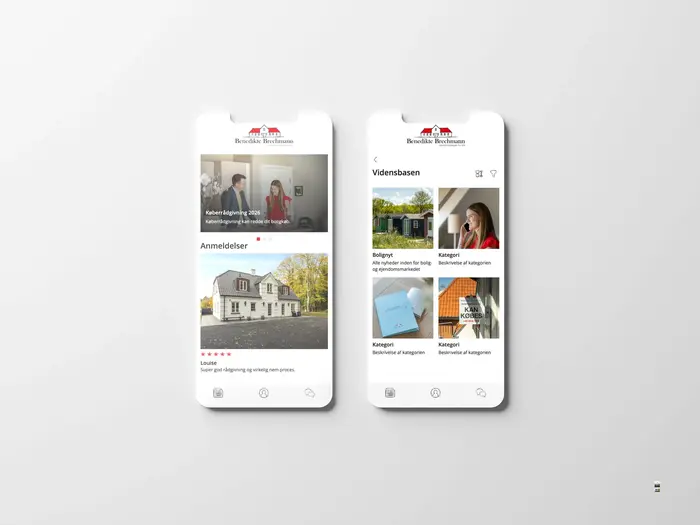
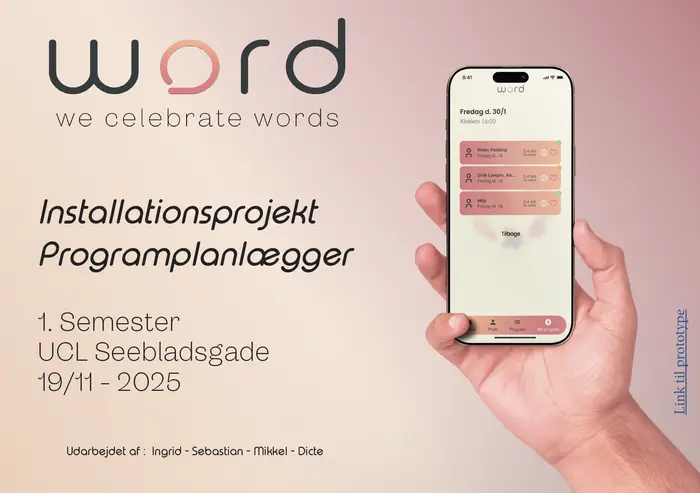
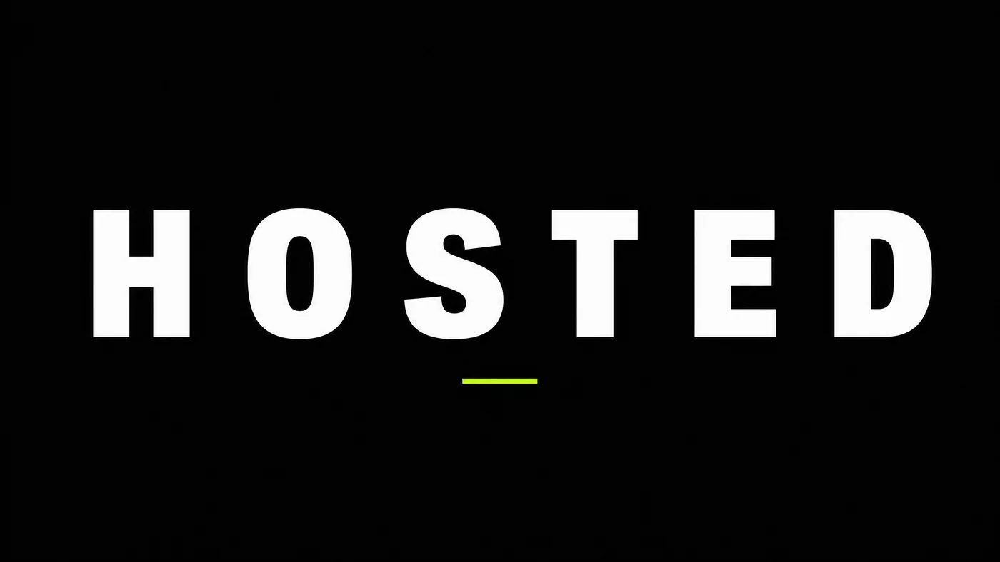
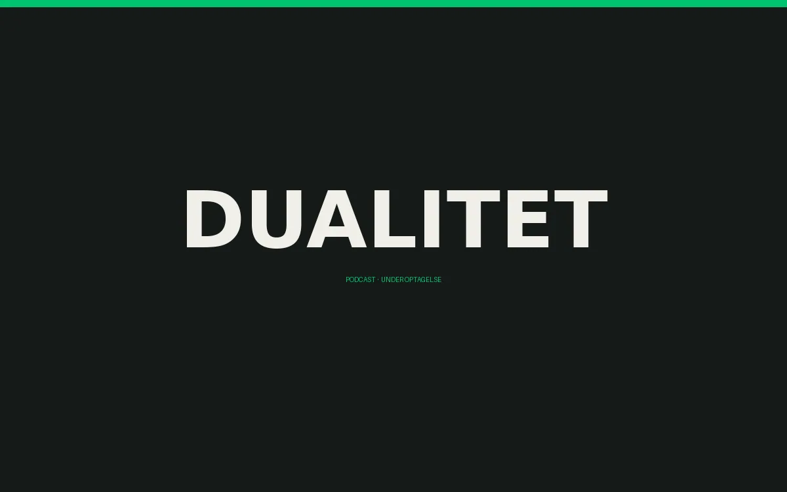
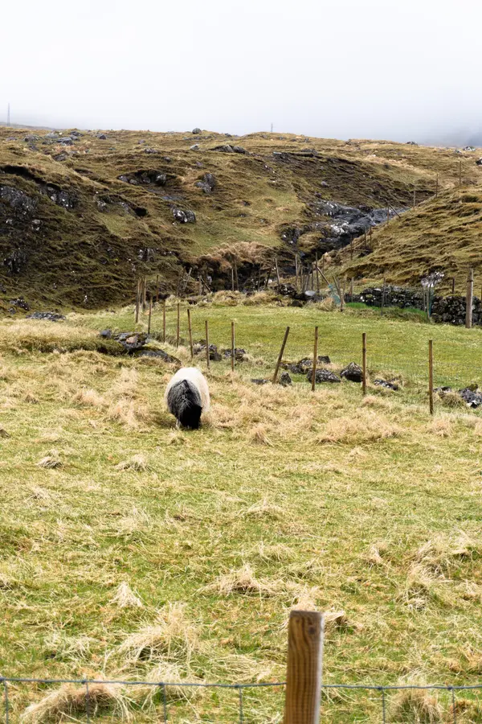
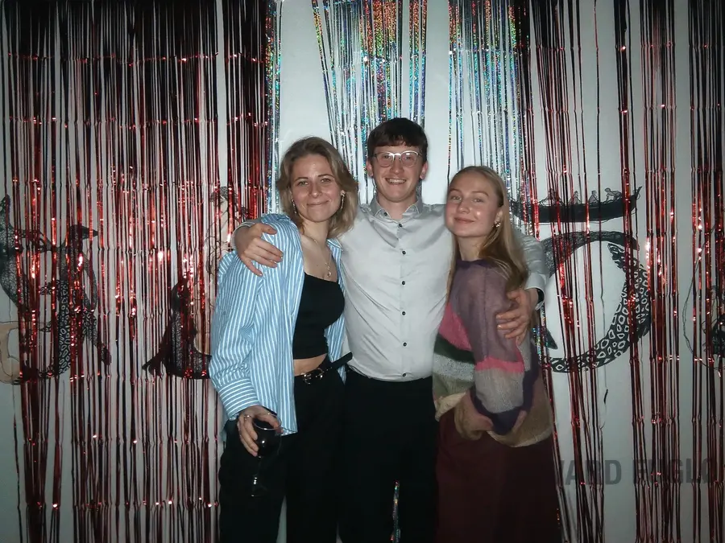
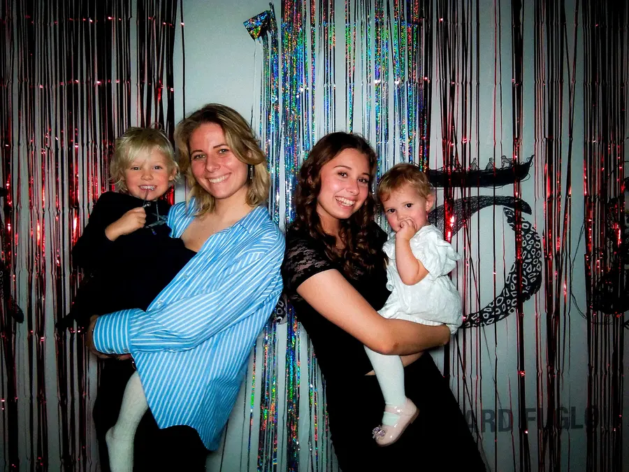
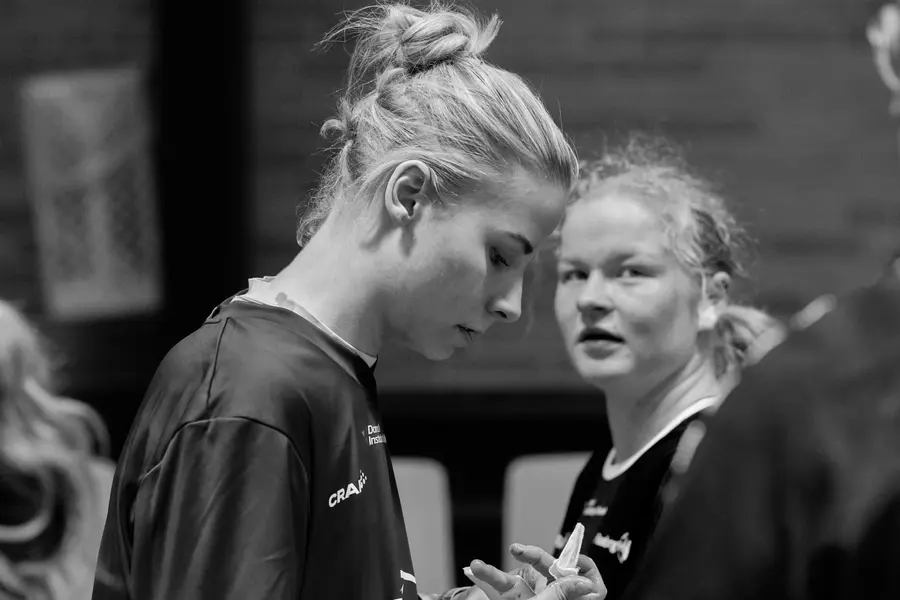
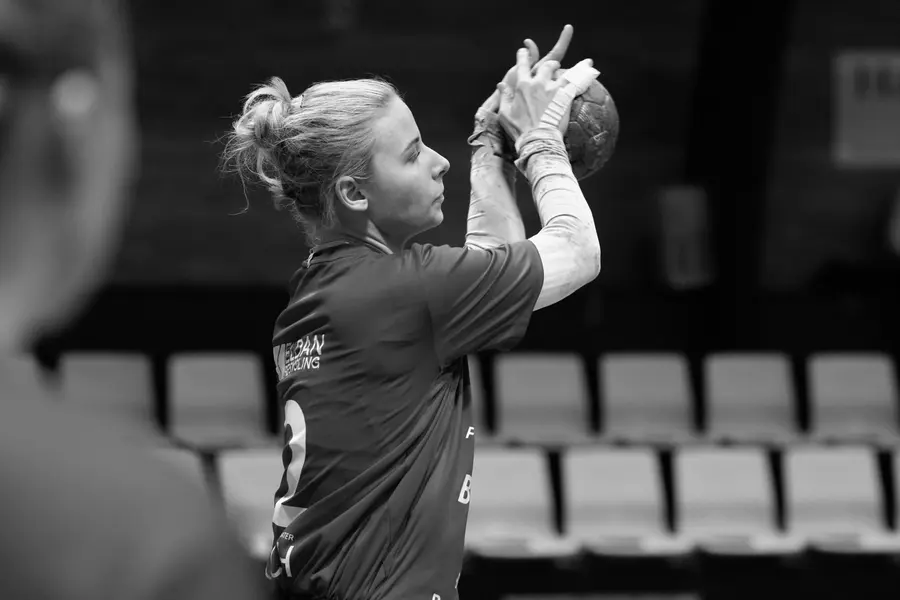
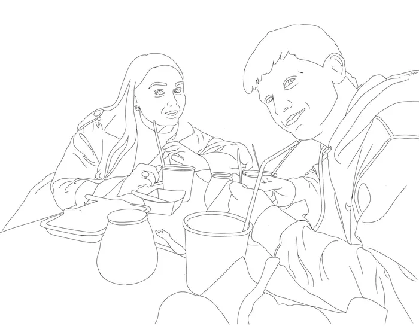

Digitalt design
Apps og prototyper hvor research kom før form. Klik på et projekt — så åbner beskrivelsen med en telefon ved siden af, du kan trykke rundt i.

KøberGuiden En app der gør boligkøb overskueligt. Bygget på én sætning fra brugertesten, der væltede vores oprindelige antagelse. App · klient · brugertest · 2026 Prøv prototypen →
Word FestivalProgramplanlægger · FigmaÅbn →
I gangHOSTEDEget produkt · app under udviklingÅbn →
I gangDualitetPodcast · under optagelseÅbn →Branding
Visuelle universer der skal kunne holde til mange formater og stadig ligne sig selv.
Print & SoMe
Alt vises i sit rigtige format — intet er beskåret for at passe i et gitter.
Foto
To serier. Nordatlantisk gråvejr og rå reportage med blitz.

Født på Færøerne,
uddannet i Odense.
Jeg voksede op mellem rå natur, gamle huse og moderne byliv. Det sidder i måden jeg ser på ting — kontrasten mellem det rolige og det rå går igen i næsten alt, jeg laver.
Jeg arbejder bedst, når der er tid til at tænke, teste og justere. I stedet for at haste mod en løsning går jeg i dybden med idéen og målgruppen, så designet ikke bare virker visuelt, men også siger noget klart.
Hvor jeg kommer fra
Færøerne er ikke bare et sted på et kort for mig — det er der, mit blik for farver, kontrast og vejr er formet. Gråt lys, sorte får, røde tage og hav i alle retninger.



Håndbold blev til arbejdsmetode
Jeg er vokset op med håndbold, hvor tempo, fokus og samarbejde er afgørende. Den tilgang tager jeg med ind i designarbejdet: hurtige beslutninger, klare prioriteringer og at aflevere til tiden — også når det går stærkt.




Undervisning og formidling
Jeg har undervist flere gange på brobygning, hvor gymnasie- og HF-elever kommer ud og prøver multimediedesign af. Jeg står for undervisningen og er den, der forklarer faget for folk, der aldrig har rørt det før.
Derudover har jeg repræsenteret uddannelsen ved åbent hus, og fra september er jeg tutor for de nye studerende.
Det er den del af mit arbejde, der ikke kan vises som et billede: at kunne forklare noget fagligt for nogen, der ikke kan det endnu, og gøre det så de får lyst til at prøve.
Kort fortalt
- Fokus
- Identitet, digitalt design, foto
- Stil
- Roligt og råt, med små legende detaljer
- Værktøjer
- Illustrator, Photoshop, InDesign, Premiere, Figma
- Proces
- Idé → skitser → test → iteration
- Sprog
- Færøsk (modersmål), dansk, engelsk
- Ved siden af
- Underviser på brobygning · tutor fra september 2026
- Base
- Færøerne & Danmark
Tegn en streg
Det er dit papir nu. Hent tegningen ned med pilen, så er den din.
tegn løs →
Skal vi lave noget sammen?
Skriv endelig — også hvis det bare er en idé, du gerne vil vende.
- Telefon
- +45 53 39 82 30
- Sted
- Færøerne & Danmark
Bag om arbejdet
Sådan ser det ud, mens det bliver til. Optagelser, gruppearbejde og alt det rod, der ikke kommer med i den færdige case.
Værktøjer jeg arbejder i
Hej, jeg er Ingrid
Multimediedesigner — identitet, digitalt design og foto
Det her er mit skrivebord. Du kan åbne mapperne og kigge dig omkring — eller bare vælge en af de tre nedenfor, så tager jeg dig direkte derhen.
Skift baggrund